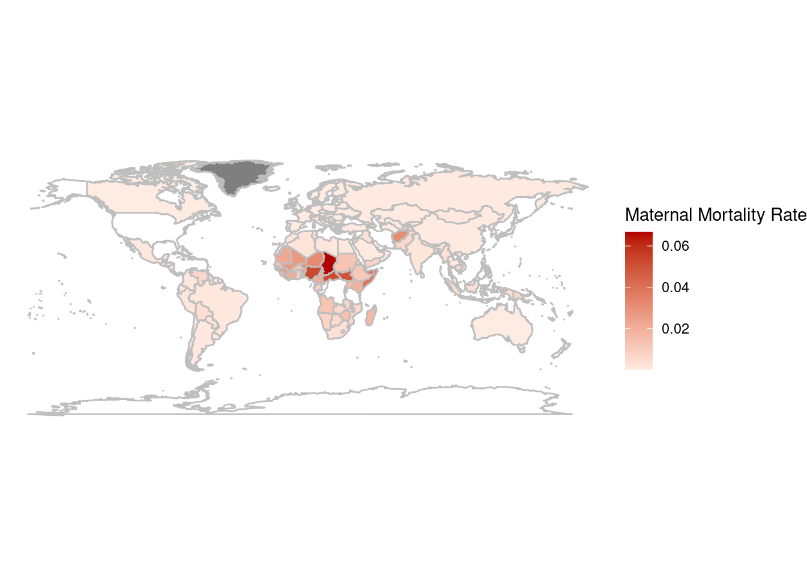
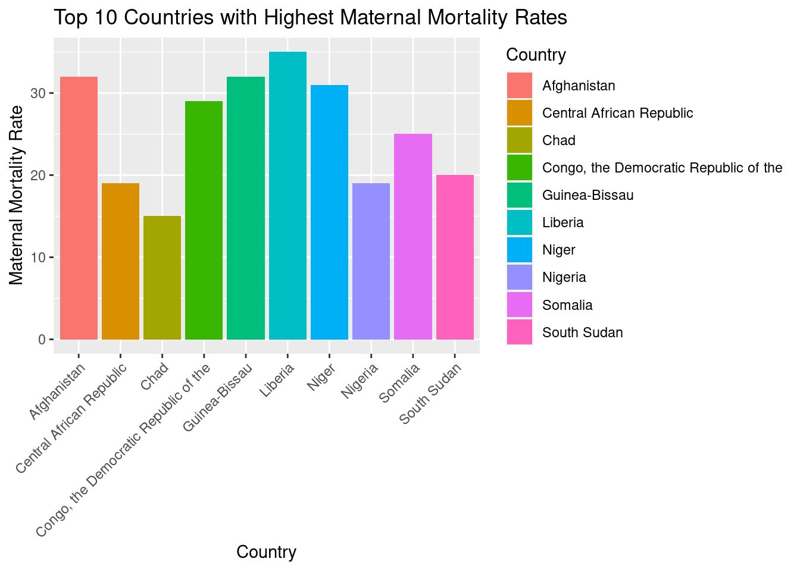

LIFETIME RISK OF MATERNAL DEATH
Lifetime risk of maternal death (probability (1 in X) that a 15-year-old girl (in the year 2020)
WHAT IS THE LIFETIME RISK OF MATERNAL DEATH?
The “Lifetime risk of maternal death” is a statistical estimate that helps to quantify the risk of maternal death for a specific group of people, in this case, 15-year-old girls. It is an essential indicator of the quality of maternal healthcare in a given country or region and can be used to track progress in reducing maternal mortality rates over time.

The world map shows that maternal mortality rate is highest in sub-Saharan African countries, especially in countries like Chad, Sierra Leone, and Nigeria. We can also see that some countries in South Asia, such as Afghanistan and Pakistan, have high maternal mortality rates.

HOW TO REDUCE IT?
To reduce the Lifetime risk of maternal death, strategies such as improving access to maternal healthcare services, promoting family planning, and addressing social and cultural factors that increase maternal mortality rates can be implemented.